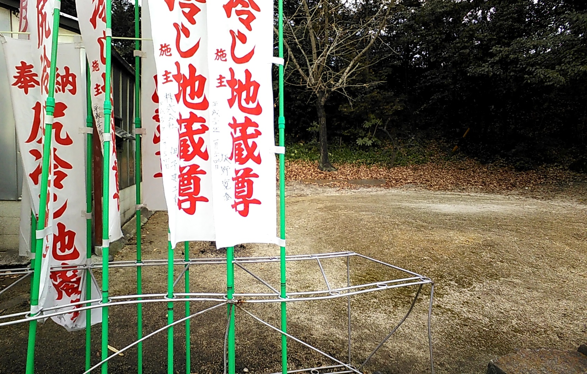

Το Σούμο αποτελεί κάτι παραπάνω από ένα άθλημα: είναι μέσο μάθησης, ανάπτυξης και ενίσχυσης αυτοπεποίθησης. Ωστόσο, πολλοί γονείς κάνουν λάθη κατά την εισαγωγή των παιδιών στο άθλημα, όχι από κακή πρόθεση, αλλά λόγω έλλειψης επαρκούς πληροφόρησης. Στο παρόν άρθρο, παρουσιάζονται τα πιο συχνά λάθη που πρέπει να αποφευχθούν, ώστε το παιδί να βιώσει τη μέγιστη δυνατή εμπειρία σε μια σχολή Σούμο.
Πολλοί γονείς επιλέγουν άθλημα για το παιδί χωρίς να έχουν κατανοήσει πλήρως τι περιλαμβάνει η προπόνηση στο Σούμο. Το αποτέλεσμα μπορεί να είναι προσδοκίες που δεν ανταποκρίνονται στην πραγματικότητα. Συστήνεται η ανάγνωση επιστημονικών άρθρων, η συζήτηση με τον προπονητή και η κατάλληλη προετοιμασία του παιδιού για την εμπειρία που θα βιώσει.
Η πρόοδος στο Σούμο είναι σταδιακή και συνδέεται με συνεχή εξάσκηση και εμπέδωση τεχνικών δεξιοτήτων. Οι γονείς καλούνται να ενθαρρύνουν και όχι να πιέζουν. Η εκμάθηση διαφοροποιείται ανάλογα με τις κινητικές δυνατότητες κάθε παιδιού:
Η γνώση και η καθοδήγηση του προπονητή είναι καθοριστικές για την ασφαλή ανάπτυξη του παιδιού.
Το Σούμο φαίνεται σκληρό στην όψη, αλλά η εκπαίδευση είναι δομημένη και ασφαλής. Δεν υπάρχουν χτυπήματα όπως σε άλλα μαχητικά αθλήματα. Η έμφαση δίνεται σε τεχνική, ισορροπία και σεβασμό.
Η απουσία συναισθηματικών εξάρσεων, ακατάλληλων λέξεων ή επιθετικής συμπεριφοράς αποτελεί θεμελιώδη κανόνα. Η Πανελλήνια Ομοσπονδία Σούμο εφαρμόζει αυστηρή πολιτική για τον σεβασμό των κανονισμών και της δεοντολογίας.
Η διατροφή είναι καθοριστική για την υγεία και την απόδοση του παιδιού. Οι γονείς πρέπει να εξασφαλίζουν ισορροπημένη πρόσληψη:
Προϊόντα υψηλής επεξεργασίας, πλούσια σε κορεσμένα λιπαρά και συνθετικά πρόσθετα, πρέπει να περιορίζονται. Η διατροφή πριν και μετά την προπόνηση παίζει ρόλο στην αποκατάσταση και στη βέλτιστη απόδοση.
Στο Σούμο, η ήττα δεν αποτελεί αποτυχία αλλά ευκαιρία μάθησης. Η διαχείριση νίκης και ήττας ενισχύει την ανάπτυξη της προσωπικότητας και της ψυχικής ανθεκτικότητας.
Κάθε παιδί έχει διαφορετικό σώμα και αντοχές. Οι γονείς πρέπει να αναγνωρίζουν σημάδια κόπωσης και να επιτρέπουν διαλείμματα ή ενδυνάμωση όπου απαιτείται, πάντα σε συνεργασία με τον προπονητή.
Η υπερβολική προστασία μπορεί να μειώσει την αυτοπεποίθηση του παιδιού. Το παιδί χρειάζεται χώρο για να πειραματιστεί, να εκτονωθεί και να μάθει μέσα από εμπειρίες, με την καθοδήγηση του προπονητή.
Το Σούμο διδάσκει σεβασμό, συνεργασία, ενσυναίσθηση και αυτοέλεγχο. Η εστίαση μόνο στη φυσική διάσταση αγνοεί την ψυχολογική ανάπτυξη που το άθλημα προσφέρει.
Η συστηματική προπόνηση είναι απαραίτητη για την ανάπτυξη δεξιοτήτων. Προπονήσεις με αυστηρή συνέπεια ενισχύουν πειθαρχία, σταθερότητα και δέσμευση του παιδιού στο άθλημα.
Η διασκέδαση είναι καθοριστική. Αν το Σούμο μετατραπεί σε υποχρέωση, χάνεται η ουσία του αθλήματος. Οι γονείς πρέπει να ενισχύουν το ενδιαφέρον και την απόλαυση της συμμετοχής.
Αποφεύγοντας τα παραπάνω λάθη, οι γονείς παρέχουν στα παιδιά τους ένα ασφαλές, υποστηρικτικό και εμπλουτισμένο περιβάλλον για τη σωματική και ψυχολογική τους ανάπτυξη μέσω του Σούμο. Το ταξίδι της μάθησης και της αυτοβελτίωσης είναι πιο σημαντικό από τον προορισμό.
Το Σούμο δεν είναι απλώς άθλημα, αλλά πολεμική τέχνη (Budo), μέρος των συστημάτων Ντο. Όπως το Καράτε-ντο, το Τζούντο, το Κέντο, η Καλλιγραφία (shodo) και το chado (τέχνη του τσαγιού), το Σούμο διδάσκει πειθαρχία, σεβασμό, συγκέντρωση και αυτοέλεγχο. Μέσα από την εκμάθηση και την προπόνηση, το παιδί δεν αποκτά μόνο σωματικές δεξιότητες, αλλά διαμορφώνει χαρακτήρα, αναπτύσσει ψυχική ανθεκτικότητα, κοινωνικές δεξιότητες και ηθικές αξίες, στοιχεία που το συνοδεύουν σε όλη του τη ζωή.
